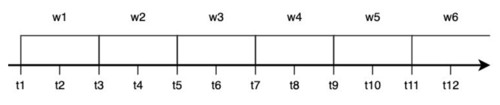
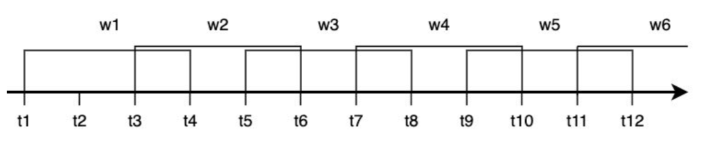
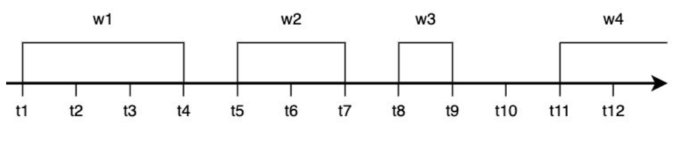

Wykład 3
ⳠCzas trwania: 1,5h 🯠Cel wykładu
zrozumienie, podstawowych sposobów przetwarzania i analizowania danych strumieniowych.
Strumienie danych
Strumieniowanie możesz kojarzyć z serwisów przesyłających wideo online. Gdy oglądasz swój ulubiony serial (tak jak teraz na zajęciach), platforma streamingowa w sposób nieprzerwany dostarcza do Ciebie kolejne â€porcje†wideo.
Podobna koncepcja dotyczy danych strumieniowych. Przesyłane porcje nie muszą mieć formatu wideo – wszystko zależy od celu biznesowego. Przykładem może być ciągły pomiar z czujników w fabrykach, elektrowniach czy innych systemach monitorujących.
Kluczowe jest to, że masz do czynienia z nieprzerwanym strumieniem danych, które musisz przetwarzać w czasie rzeczywistym. Nie możesz czekać na zatrzymanie linii produkcyjnej, aby przeprowadzić analizę – wszelkie pojawiające się problemy powinny być rejestrowane natychmiast, aby szybko na nie reagować.
Analiza strumieniowa to ciągłe przetwarzanie i analiza dużych zbiorów danych w ruchu.
Można to porównać do innych aspektów Big Data. Przetwarzanie wsadowe (batchowe) to przeciwieństwo przetwarzania strumieniowego – najpierw gromadzisz duże ilości danych, a dopiero potem je analizujesz. Oczywiście, możesz pobrać całe wideo przed obejrzeniem, ale czy miałoby to sens?
Istnieją sytuacje, w których podejście wsadowe jest wystarczające, ale już teraz widzisz, że przetwarzanie strumieniowe może dostarczyć biznesowi dodatkową wartość, której trudno oczekiwać przy klasycznym przetwarzaniu wsadowym.
Analiza danych w czasie rzeczywistym a przetwarzanie strumienia zdarzeń
Łatwo jest połączyć analizę w czasie rzeczywistym z analizą strumieniową (lub przetwarzaniem strumienia zdarzeń). Choć technologie analizy strumieniowej mogą umożliwiać analizę w czasie rzeczywistym, to nie to samo!
Analiza strumieniowa polega na przetwarzaniu danych w ruchu, natomiast analityka w czasie rzeczywistym odnosi się do każdej metody przetwarzania danych, w której opóźnienie jest na tyle krótkie, że spełnia określone wymagania biznesowe dotyczące â€czasu rzeczywistegoâ€.
Zazwyczaj systemy analizy w czasie rzeczywistym dzieli się na twarde i miękkie systemy czasu rzeczywistego:
- Twarde systemy czasu rzeczywistego (np. systemy sterujące w samolotach) wymagają ścisłego dotrzymania terminów – każde opóźnienie może mieć katastrofalne skutki.
- Miękkie systemy czasu rzeczywistego (np. stacje pogodowe) mogą tolerować pewne opóźnienia, choć w skrajnych przypadkach może to prowadzić do utraty wartości danych.
Co więcej, podczas gdy analiza strumieniowa zakłada istnienie dedykowanej architektury strumieniowej, analiza w czasie rzeczywistym nie jest powiązana z żadną konkretną architekturą.
Kluczowe jest to, że analityka w czasie rzeczywistym oznacza przetwarzanie danych w okresie, który dana firma uznaje za â€czas rzeczywisty†– może to być zarówno kilka milisekund, jak i kilka sekund, w zależności od potrzeb biznesowych.
Źródła danych przesyłanych strumieniowo obejmują:
- czujniki sprzętu,
- strumienie kliknięć,
- śledzenie lokalizacji,
- interakcję z użytkownikiem,
- kanały mediów społecznościowych,
- notowania giełdowe,
- aktywność w aplikacjach,
- inne.
Firmy wykorzystują analitykę strumieniową do wykrywania i interpretowania wzorców, tworzenia wizualizacji, generowania spostrzeżeń i alertów oraz uruchamiania procesów w czasie rzeczywistym lub bliskim rzeczywistemu.
Uzasadnienie biznesowe
Analityka służy do identyfikowania istotnych wzorców w danych i odkrywania nowej wiedzy – zarówno w przypadku transmisji strumieniowych, jak i tradycyjnych analiz.
Jednak w dzisiejszym świecie natura â€znajdowania sensownych wzorców w danych†uległa zmianie, ponieważ zmienił się charakter samych danych. Ich szybkość, objętość i różnorodność eksplodowały.
Twitter generuje ponad 500 milionów tweetów dziennie, a według prognoz IDC do 2025 roku urządzenia IoT będą w stanie wytworzyć 79,4 zettabajta (ZB) danych. Trend ten wciąż przyspiesza.
Przykładowe biznesowe zastosowania
- Dane z sensorów IoT i detekcja anomalii
- Stock Trading (problemy regresyjne) - czas reagowania na zmiany i czas zakupy i sprzedaży akcji.
- Clickstream for websites (problem klasyfikacji) - śledzenie i analiza gości na stronie serwisu internetowego - personalizacja strony i treści.
Definicje
Zapoznaj się z tematem danych strumieniowych
Definicja 1 – Zdarzenie to wszystko, co można zaobserwować w danym momencie czasu. Jest generowane jako bezpośredni skutek działania.
Definicja 2 – W kontekście danych zdarzenie to niezmienialny rekord w strumieniu danych, zakodowany jako JSON, XML, CSV lub w formacie binarnym.
Definicja 3 – Ciągły strumień zdarzeń to nieskończony zbiór pojedynczych zdarzeń uporządkowanych w czasie, np. logi z urządzeń.
Definicja 4 – Strumień danych to dane tworzone przyrostowo w czasie, generowane ze źródeł statycznych (baza danych, odczyt linii z pliku) lub dynamicznych (logi, sensory, funkcje).
Przedsiębiorstwo to organizacja, która generuje i odpowiada na ciągły strumień zdarzeń.
Analityka strumieniowa
Analityka strumieniowa (ang. stream analytics) nazywana jest również przetwarzaniem strumieniowym zdarzeń (ang. event stream processing) – czyli przetwarzaniem dużych ilości danych już na etapie ich generowania.
Niezależnie od zastosowanej technologii, wszystkie dane powstają jako ciągły strumień zdarzeń – obejmuje to m.in.:
- działania użytkowników na stronach internetowych,
- logi systemowe,
- pomiary z sensorów.
Czas w analizie danych w czasie rzeczywistym
W przypadku przetwarzania wsadowego analizujemy dane historyczne, a czas uruchomienia procesu nie ma żadnego związku z momentem wystąpienia analizowanych zdarzeń.
Natomiast w przetwarzaniu strumieniowym wyróżniamy dwie koncepcje czasu:
- Czas zdarzenia (event time) – moment, w którym zdarzenie faktycznie miało miejsce.
- Czas przetwarzania (processing time) – moment, w którym system przetwarza zdarzenie.
Idealne przetwarzanie danych
W idealnej sytuacji przetwarzanie następuje natychmiast po wystąpieniu zdarzenia:

Rzeczywiste przetwarzanie danych
W praktyce przetwarzanie danych zawsze odbywa się z pewnym opóźnieniem, co jest widoczne jako punkty poniżej linii idealnego przetwarzania (poniżej przekątnej na wykresie).

W aplikacjach przetwarzania strumieniowego istotna jest różnica między czasem powstania zdarzenia a czasem jego przetwarzania. Do najczęstszych przyczyn opóźnień należą:
- przesyłanie danych przez sieć,
- brak komunikacji między urządzeniem a siecią.
Przykładem jest śledzenie położenia samochodu przez aplikację GPS – przejazd przez tunel może spowodować chwilową utratę danych.
Obsługa opóźnień w przetwarzaniu strumieniowym
Opóźnienia w przetwarzaniu zdarzeń można obsłużyć na dwa sposoby:
- Monitorowanie liczby pominiętych zdarzeń i wyzwalanie alarmu w przypadku zbyt dużej liczby odrzuceń.
- Zastosowanie korekty za pomocą watermarkingu, czyli dodatkowego mechanizmu uwzględniającego opóźnione zdarzenia.
Proces przetwarzania zdarzeń w czasie rzeczywistym można przedstawić jako funkcję schodkową:

Nie wszystkie zdarzenia wnoszą wkład do analizy – niektóre mogą zostać odrzucone ze względu na zbyt duże opóźnienie.
Wykorzystanie watermarkingu pozwala na uwzględnienie dodatkowego czasu na pojawienie się opóźnionych zdarzeń. Proces ten obejmuje wszystkie zdarzenia powyżej przerywanej linii. Mimo to nadal mogą zdarzyć się przypadki, w których niektóre punkty zostaną pominięte.

Przedstawione na wykresach sytuacje jawnie wskazują dlaczego pojęcie czasu jest istotnym czynnikiem i wymaga ścisłego określenia już na poziomie definiowania potrzeb biznesowych. Przypisywanie znaczników czasu do danych (zdarzeń) to trudne zadanie.
Okna czasowe w analizie strumieniowej
W przetwarzaniu strumieniowym okna czasowe pozwalają na grupowanie danych w ograniczone czasowo segmenty, co umożliwia analizę zdarzeń w określonych przedziałach czasowych. W zależności od zastosowania stosuje się różne typy okien, dostosowane do charakterystyki danych i wymagań analitycznych.
Okno rozłączne (Tumbling Window)
Jest to okno o stałej długości, które nie nakłada się na siebie – każde zdarzenie należy tylko do jednego okna.
✅ Charakterystyka:
- Stała długość okna
- Brak nakładania się na siebie
- Idealne do podziału danych na równe segmenty czasowe
📌 Przykład: Analiza liczby zamówień w sklepie internetowym co 5 minut.

Okno przesuwne (Sliding Window)
Obejmuje wszystkie zdarzenia następujące w określonym przedziale czasu, gdzie okno przesuwa się w sposób ciągły.
✅ Charakterystyka:
- Każde zdarzenie może należeć do kilku okien
- Okno przesuwa się o zadany interwał
- Przydatne do wykrywania trendów i anomalii
📌 Przykład: Śledzenie średniej temperatury w ciągu ostatnich 10 minut, aktualizowane co 2 minuty.

Okno skokowe (Hopping Window)
Jest podobne do okna rozłącznego, ale pozwala na nakładanie się okien na siebie, dzięki czemu jedno zdarzenie może należeć do kilku okien. Jest stosowane do wygładzania danych.
✅ Charakterystyka:
- Stała długość okna
- Możliwość nakładania się na siebie
- Przydatne do redukcji szumów w danych
📌 Przykład: Analiza liczby odwiedzających stronę co 10 minut, ale aktualizowana co 5 minut, aby lepiej wychwytywać trendy.

Okno sesyjne (Session Window)
Okno sesyjne grupuje zdarzenia na podstawie okresów aktywności i zamyka się po określonym czasie braku aktywności.
✅ Charakterystyka:
- Dynamiczna długość okna
- Definiowane przez aktywność użytkownika
- Stosowane w analizie sesji użytkowników
📌 Przykład: Analiza sesji użytkowników na stronie internetowej – sesja trwa tak długo, jak długo użytkownik wykonuje akcje, ale kończy się po 15 minutach braku aktywności.
Podsumowanie
Różne rodzaje okien czasowych są stosowane w zależności od specyfiki danych i celów analizy. Wybór odpowiedniego okna wpływa na dokładność wyników i efektywność systemu analitycznego.
| Typ okna | Charakterystyka | Zastosowanie |
|---|---|---|
| Rozłączne (Tumbling) | Stała długość, brak nakładania | Raporty okresowe |
| Przesuwne (Sliding) | Stała długość, nakładające się okna | Trendy, wykrywanie anomalii |
| Skokowe (Hopping) | Stała długość, częściowe nakładanie | Wygładzanie danych |
| Sesyjne (Session) | Dynamiczna długość, zależna od aktywności | Analiza sesji użytkowników |
Każdy typ okna ma swoje unikalne zastosowania i pomaga w lepszej interpretacji danych strumieniowych. Wybór właściwej metody zależy od potrzeb biznesowych i charakterystyki analizowanych danych.
W analizie danych strumieniowych interpretacja czasu jest złożonym zagadnieniem, ponieważ:
- Różne systemy mają różne zegary, co może prowadzić do niespójności,
- Dane mogą docierać z opóźnieniem, co wymaga technik watermarkingu i okien czasowych,
- Różne podejścia do analizy czasu zdarzenia i czasu przetwarzania wpływają na dokładność wyników.